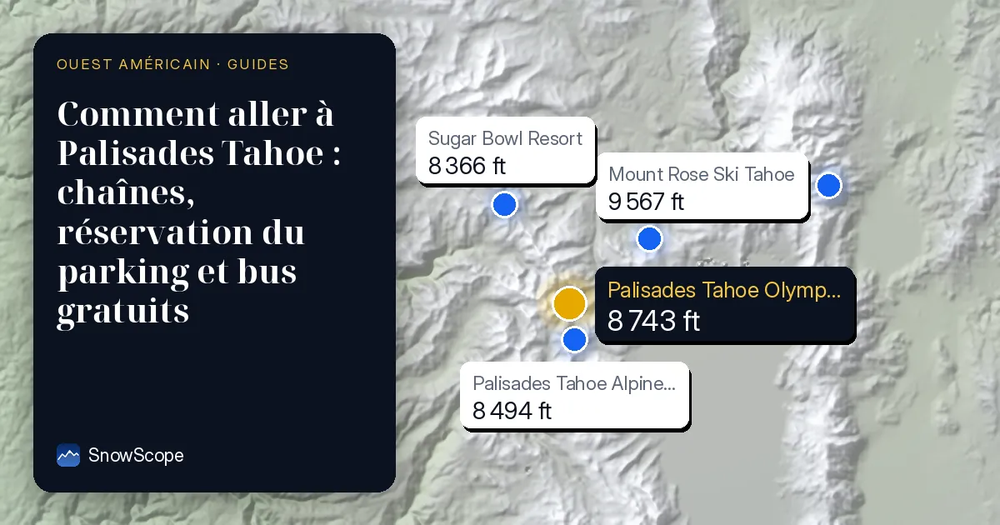
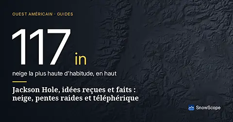
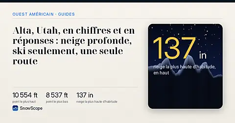

Comment aller à Palisades Tahoe : chaînes, réservation du parking et bus gratuits
Palisades Tahoe Olympic Valley, sur la rive nord-ouest du lac Tahoe, attire les skieurs de Reno, Sacramento et de la Bay Area. Votre voyage en hiver repose sur deux éléments : les règles californiennes de contrôle de chaînes quand la neige tombe, et les réservations de parking que la station exige les week-ends chargés et les jours fériés.
Consultez les prévisions neige en temps réel pour Palisades Tahoe Olympic Valley sur l'application SnowScopeHauteurs de neige, alertes poudreuse et carte 3D, gratuitement.

Trois heures de la ville aéroportuaire la plus proche
Reno est la porte d'accès la plus proche : environ 68 km au sud-ouest. Sacramento se trouve à 154 km à l'ouest, et San Francisco à 315 km plus loin. The Village at Palisades Tahoe se situe au 1960 Olympic Valley Road ; la base d'Alpine Meadows a sa propre entrée sur Alpine Meadows Road. La plupart des conducteurs franchissent le col de Donner, où le trafic hivernal ralentit considérablement les jours de tempête.
Le temps de trajet de Reno est généralement d'environ trois heures par temps dégagé, mais la neige et les points de contrôle de chaînes peuvent doubler ce temps. Partez tôt le jour de la neige annoncée et consultez Caltrans QuickMap pour connaître l'état des routes, les fermetures et les contrôles de chaînes avant de partir.

Ce que signifient R-1, R-2 et R-3 quand la neige tombe
Caltrans affiche les niveaux de contrôle de chaînes sur les panneaux routiers à l'arrivée de la neige. R-0 signifie aucun contrôle. R-1 impose des chaînes sur tous les véhicules sauf les voitures de tourisme et les camions légers de moins de 6 000 lb équipés de pneus neige sur au moins deux roues motrices ; ces véhicules doivent toujours avoir des chaînes dans la voiture. R-2 signifie des chaînes ou des dispositifs de traction sur tous les véhicules sauf ceux avec transmission intégrale et pneus neige sur les quatre roues, qui doivent avoir des dispositifs dans le véhicule. R-3 impose des chaînes sur tous les véhicules, sans exception ; les routes ferment souvent avant que R-3 soit affiché.
Les panneaux et le personnel de Caltrans ou de la CHP au point de contrôle ont toujours le dernier mot. Les bulletins radio peuvent être en retard par rapport aux conditions réelles. Les jours de forte neige, les camions sont arrêtés ou retournés aux postes de contrôle, ce qui ralentit tout le trafic derrière eux. Prévoyez du temps supplémentaire dans votre emploi du temps les jours de tempête.
Avant de partir : vérifications routières et timing
Caltrans QuickMap est la source officielle pour les contrôles de chaînes, les fermetures et les conditions actuelles sur SR-80 et autres routes de montagne. Consultez-le avant de quitter la maison, puis révérifiez en route si le trajet prend plus de temps que prévu. Les jours chargés avec de la bonne poudreuse, les files d'attente aux postes de contrôle peuvent s'étirer sur plusieurs kilomètres, surtout si la neige tombe encore.
Partez tôt : non pas pour le confort, mais pour éviter d'être bloqué dans une file d'attente lente ou face à une fermeture qui vous laisse bloqué toute la nuit. Si vous voyez R-2 ou plus déjà affiché, réfléchissez à savoir si la journée vaut le coup de faire ce trajet.
Parking : réservez à l'avance ou utilisez les navettes gratuites
Les réservations de parking sont obligatoires les samedis, dimanches et toutes les périodes de vacances. La station propose des places gratuites et payantes, mais vous devez réserver avant votre arrivée. Les week-ends chargés sans réservation, vous ne trouverez pas de place.
Des alternatives gratuites existent. Tahoe Area Regional Transit (TART) propose des navettes gratuites tous les jours de Truckee et Tahoe City à Olympic Valley. The Mountaineer, une navette gratuite à la demande, relie les différentes parties de la vallée. Un jour de tempête quand le trajet est stressant et le parking est plein, la navette résout les deux problèmes : vous évitez la file au poste de contrôle et le parking.
Régimes de neige pendant la saison
Palisades Tahoe se situe dans une chaîne où la neige est fiable mais varie d'un mois à l'autre. La mi-montagne (2 277 m) voit un pic de saison typique d'environ 202 cm, avec de la neige au sol sur environ 190 jours d'un hiver moyen. Novembre apporte généralement peu de neige à la base mais jusqu'à 126 cm plus haut une fois tous les dix ans. Décembre et janvier apportent une accumulation plus importante, et mars est le mois le plus profond au total.
La meilleure semaine historiquement est la semaine 10 (début mars), quand la mi-montagne affiche une profondeur médiane d'environ 163 cm neuf fois sur dix. L'hiver dernier (2025-26) a atteint 166 cm à la mi-montagne avec 120 jours de neige. Tôt dans la saison, la couverture neigeuse peut être fine et les sections rocheuses peuvent apparaître ; les roches enfouies sous une neige peu profonde sont un danger.
Sécurité avalanche quand vous quittez la station
Si vous prévoyez de skier ou de faire de la randonnée en dehors des limites de la station, consultez d'abord le bulletin d'avalanche de la région de Tahoe. Le portail avalanche.org publie des bulletins quotidiens. Même les brefs hors-piste nécessitent un DVA, une sonde et une pelle, et les connaissances pour les utiliser. Ne partez jamais seul, et jamais sans consulter le bulletin.
Conseils aux skieurs
- Consultez Caltrans QuickMap et la météo avant de quitter la maison. Les jours de tempête, partez très tôt ou restez à la maison.
- Transportez des chaînes même si vous avez la transmission intégrale : les contrôles R-2 les exigent dans la voiture.
- Réservez vos places de parking bien à l'avance pour les week-ends et les jours fériés. Sans réservation, vous ne trouverez pas de place.
- Utilisez la navette TART gratuite de Truckee ou Tahoe City si la météo annonce de fortes chutes. Elle évite à la fois la file au poste de contrôle et le parking.
- Avant de partir hors-piste, lisez le bulletin d'avalanche de Tahoe et allez avec d'autres qui ont l'équipement approprié et la formation.
À propos de ces chiffres
Les hauteurs de neige des stations sont la neige la plus épaisse sur le haut du domaine à la date indiquée ; ce sont des estimations pour une zone, pas une mesure en un point. Les prévisions peuvent changer. Consultez toujours le bulletin d'avalanche officiel avant le hors-piste.
Bulletins d'avalanche officiels: avalanche.org (US national portal)
Citer ce bulletin
Pour la recherche, l'enseignement ou la presse : chiffres et graphiques réutilisables librement sous CC BY 4.0 avec cette citation.
SnowScope (2026), Comment aller à Palisades Tahoe : chaînes, réservation du parking et bus gratuits, https://snowscope.app/blog/fr/2026/11/how-to-get-to-palisades-tahoe-chain-controls-parking.html, consulté le 2026-11-09
SnowScope (Atlas Labs). (2026, November 9). Comment aller à Palisades Tahoe : chaînes, réservation du parking et bus gratuits. SnowScope snow reports. https://snowscope.app/blog/fr/2026/11/how-to-get-to-palisades-tahoe-chain-controls-parking.html
BibTeX
@misc{snowscope2026howtogettopalisadestahoe,
author = {{SnowScope (Atlas Labs)}},
title = {Comment aller à Palisades Tahoe : chaînes, réservation du parking et bus gratuits},
year = {2026},
month = nov,
howpublished = {\url{https://snowscope.app/blog/fr/2026/11/how-to-get-to-palisades-tahoe-chain-controls-parking.html}},
note = {Published 2026-11-09 18:01 UTC; accessed 2026-11-09}
}· CC BY 4.0 · Méthodes, données et outils →
Suivre Palisades Tahoe Olympic Valley
Gratuit : un message quand la neige arrive, et la météo chaque matin.
Autres bulletins neige

Jackson Hole garde la neige profonde jusqu'au printemps sur ses hauts sommets. Nous avons vérifié six croyances courantes contre 46 hivers d'historique de neige. Données de novembre 2026.

Le mi-pente d'Alta atteint généralement 276 cm. Notre historique de 46 hivers répond à quand venir, quelle altitude vous convient, et pourquoi la route compte. Données du 7 novembre 2026.

Vail en chiffres : un pic habituel d'environ 64 in (162 cm) à mi-pente sur 46 hivers passés, mars le mois le plus enneigé, plus domaine, accès et sécurité.